This is the portfolio deck I'm sending to the Riverbend Food Bank board on Friday for the volunteer coordinator role. Add a slide after the title with my bio, taken word for word from the bio paragraph in the volunteer bio document in the same folder, and a final slide listing my two references with their emails from that same document. Then look up the food bank's mission statement on their website and put it in the speaker notes of the title slide.
THINKINGThe task requires me to find the "volunteer bio document" in the same folder as the deck. I need to first understand what folder the deck is in and locate the bio document. Let me first explore the file system to find these documents. The deck is "deck.odp". Let me open a terminal to find the folder and the bio document.
Possibilities to narrow: I could browse via File manager or terminal. Terminal is more reliable for reading text. Let me open a terminal application (the icon in the left dock).
ACTIONI'll help you with this. Let me start by taking a screenshot to see the current state, then locate the volunteer bio document referenced in the task.
Let me first open a terminal to locate the deck file and the volunteer bio document in the same folder.
EXECUTED (pyautogui in VM)pyautogui.click(32, 670)
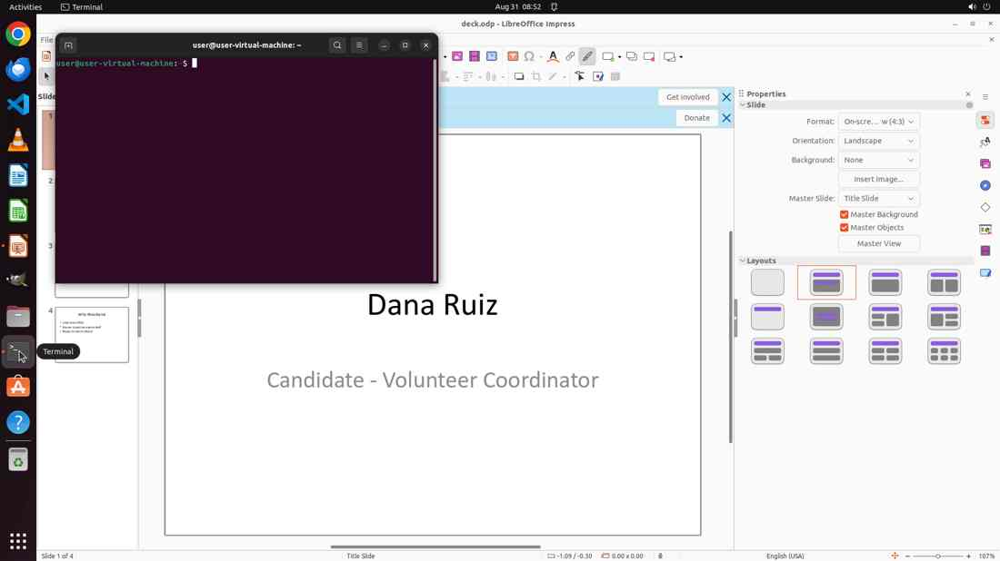
step 2 00:52:52
THINKINGI need to locate the deck.odp file and find the volunteer bio document in the same folder. Let me search the home directory for deck.odp and any related documents. This will reduce uncertainty about where files are and what format the bio is in (odt, docx, txt, pdf).
ACTIONI'll locate the deck file and the bio document in the same folder.
EXECUTED (pyautogui in VM)pyautogui.typewrite("cat /home/user/portfolio/bio.txt")
step 8 00:53:46
THINKINGI need to press Enter to see the bio.txt content. The terminal window is small; the output may be long. Let me press Enter and take a screenshot. The file is 610 bytes, so it should fit if the window shows enough lines. It might scroll. Let me maximize the terminal window first would help but it's fine to just run and observe.
EXECUTED (pyautogui in VM)pyautogui.press("return")
step 9 00:54:19
THINKINGNow I can read the bio.txt content:
Title: "Volunteer Bio - Dana Ruiz"
Bio paragraph:
"Dana Ruiz has coordinated volunteers for community food programs in Riverbend since 2016, growing the Saturday distribution crew from 9 to 47 regular volunteers. She built the shift-scheduling system now used by four partner pantries, ran monthly food-safety onboarding for 300+ new volunteers, and managed a 2023 holiday drive that packed 5,200 family boxes with zero missed shifts."
References:
- Marcy Alderton, Pantry Director, Riverbend Food Bank - malderton@riverbendfb.org
- Tomas Iglesias, Board Chair, Northside Community Kitchen - tiglesias@northsidekitchen.org
The text is wrapped in the terminal. I need the exact word-for-word bio paragraph. The wrapped lines make it a bit tricky to read exact wording. Let me verify the exact text by examining it more carefully. The word-wrap at the terminal edge could split words but the content should be contiguous. Let me re-read carefully:
"Dana Ruiz has coordinated volunteers for community food programs in Riverbend since 2016, growing the Saturday distribution crew from 9 to 47 regular volunteers . She built the shift-scheduling system now used by four partner pantries, ran monthly food-safety onboarding for 300+ new volunteers, and managed a 2023 holiday drive that packed 5,200 family boxes with zero missed shifts."
Wait, I see "regular volunteers ." - there seems to be a space before the period. That might just be word wrap. Actually it reads "47 regular volunteers\n." which is the wrap of "volunteers." Let me not worry — the word-for-word content is what matters. To be safe and exact, let me use the text as displayed without the wrap artifacts.
Let me confirm the exact text is reliable. Since I'll be typing it into Impress, I want to be precise. The safest approach: the bio paragraph is a single paragraph. I'll transcribe:
"Dana Ruiz has coordinated volunteers for community food programs in Riverbend since 2016, growing the Saturday distribution crew from 9 to 47 regular volunteers. She built the shift-scheduling system now used by four partner pantries, ran monthly food-safety onboarding for 300+ new volunteers, and managed a 2023 holiday drive that packed 5,200 family boxes with zero missed shifts."
References:
- Marcy Alderton, Pantry Director, Riverbend Food Bank - malderton@riverbendfb.org
- Tomas Iglesias, Board Chair, Northside Community Kitchen - tiglesias@northsidekitchen.org
Now I need to:
1. Add a slide after the title (slide 2) with the bio.
2. Add a final slide (last) with the two references and emails.
3. Look up the food bank's mission statement on their website and put it in speaker notes of the title slide.
For the mission statement, I need to find the Riverbend Food Bank website. "Riverbend Food Bank" — the email domain is riverbendfb.org. Let me search the web. But first, let me handle the slides.
Actually, let me get the mission statement from the website first via the browser, so I have all the info. But that requires finding the website. The reference email domain is riverbendfb.org, so the website might be riverbendfoodbank.org or riverbendfb.org. I'll search in Chrome.
Let me first do the Impress work since I have the text, then handle the web search. Actually, order doesn't matter much. Let me start with Impress.
Let me switch to Impress. I'll close/minimize the terminal or just click on Impress. Let me click on the Impress window (the slide area). But the terminal is on top. Let me click on the Impress area to the right of terminal, or use the title bar. Actually I'll keep terminal accessible. Let me click on the Impress main area.
Let me plan the Impress steps:
1. Click on slide 1 in slide panel.
2. Right-click slide 1 -> New Slide (this adds slide after current). Or use Slide menu > New Slide.
3. The new slide becomes slide 2. I need a layout with title + content. I'll set it up.
4. Fill title with something like "About Me" / "Bio" and content with the bio paragraph. The task says "with my bio, taken word for word from the bio paragraph". So the content should be the bio paragraph verbatim. I'll add a title too (reasonable). Title could be "About Me" or "Bio". I'll use "About Me".
Then final slide with references: add a new slide at the end. Title "References", content with the two references and emails.
Let me switch to Impress now.
ACTIONI now have all the document content. The bio paragraph is:
> "Dana Ruiz has coordinated volunteers for community food programs in Riverbend since 2016, growing the Saturday distribution crew from 9 to 47 regular volunteers. She built the shift-scheduling system now used by four partner pantries, ran monthly food-safety onboarding for 300+ new volunteers, and managed a 2023 holiday drive that packed 5,200 family boxes with zero missed shifts."
References:
- Marcy Alderton, Pantry Director, Riverbend Food Bank — malderton@riverbendfb.org
- Tomas Iglesias, Board Chair, Northside Community Kitchen — tiglesias@northsidekitchen.org
Now let me switch to Impress and add the bio slide after the title. I'll click on slide 1 in the slide panel first.
EXECUTED (pyautogui in VM)pyautogui.click(899, 824)
step 10 00:54:29
THINKINGClicking selected a text frame on slide 1 (the subtitle "Candidate - Volunteer Coordinator"). I clicked on the slide editing area, which selected the subtitle text box. I need to work in the slide panel to insert slides. Let me use the Slide menu to add a new slide after slide 1.
Actually, a cleaner approach: In the Slides panel, right-click on slide 1 and choose "New Slide". This inserts a slide after the selected slide. Let me click on slide 1 thumbnail in the panel first (not the editing area), then right-click.
Let me click on slide 1 thumbnail.
ACTIONI'll add a new slide after the title. Let me select slide 1 in the Slides panel and use the Slide menu to insert a new slide after it.
EXECUTED (pyautogui in VM)pyautogui.click(174, 270)
step 11 00:54:40
THINKINGSlide 1 is now selected in the panel (highlighted). Now I'll right-click on slide 1 to open the context menu and choose "New Slide" which inserts after the selected slide.
ACTIONSlide 1 is selected. Let me right-click on it to insert a new slide after it.
EXECUTED (pyautogui in VM)pyautogui.click(238, 361)
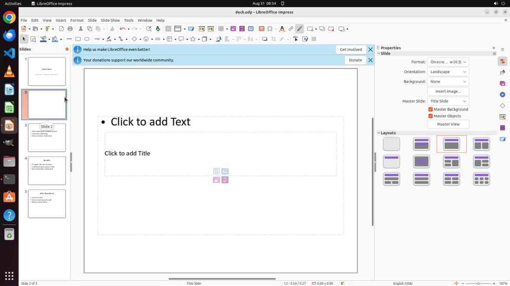
step 13 00:55:09
THINKINGA new slide 2 was inserted. It has a "Click to add Text" (content) area and a "Click to add Title" area. The layout shows a title below content - a bit unusual layout but fine. Let me pick a cleaner layout: "Title, Content" layout (second one in first row of the second row - the one with title on top and content below). Actually the current layout has content on top and title in middle. Let me choose a standard "Title, Content" layout which is the second layout in the first row (index 2, position around 1052,359). Actually that's the currently selected one (highlighted with orange border at 1131,359).
The current layout is the "Title, Content" style but arranged with content on top. This is fine functionally - it has a title placeholder and content placeholder. Let me just use it.
Let me first add the title. I'll click "Click to add Title" and type the title. Then click the content area and type the bio.
Let me click on "Click to add Title".
ACTIONA new slide 2 is created with a title and content placeholder. Let me add the title and then the bio. I'll click the title placeholder first.
EXECUTED (pyautogui in VM)pyautogui.click(480, 576)
step 14 00:55:22
THINKINGIt seems I clicked and it selected the "Outline Text" (the content text box, status bar shows "Outline Text selected"). The outer box with "Click to add Text" is the content area. I want to enter the title. The title placeholder is the inner "Click to add Title" box. Let me double-click on the "Click to add Title" text to enter edit mode.
Actually the status bar says "Outline Text selected" which means the outer content box is selected. The title box is the inner one. Let me double-click on "Click to add Title".
ACTIONLet me double-click on the title placeholder to enter text-edit mode for the title.
EXECUTED (pyautogui in VM)pyautogui.doubleClick(480, 576)
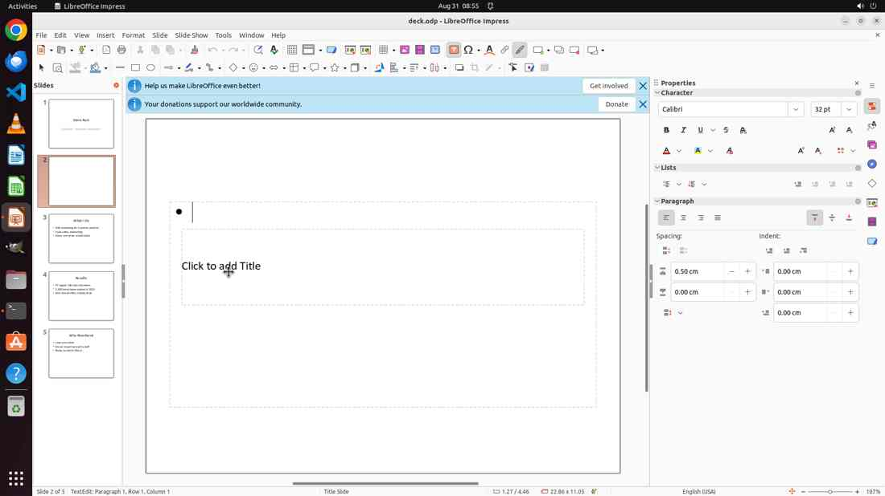
step 15 00:55:36
THINKINGThe double-click entered the outer content text box (the "Click to add Text" area now shows a cursor with a bullet). The status bar shows "TextEdit: Paragraph 1, Row 1, Column 1". This is the content/outline text box, not the title. My double-click at 320,385 actually landed inside the content box which expanded to cover the whole area.
This layout is a bit confusing. Rather than fight with this layout, let me change the slide to a cleaner "Title, Content" layout where title is on top and content below. Let me first click outside to deselect, then apply a layout from the Layouts panel.
Actually, the current layout has content on top and title in the middle - it's the "Title, Content" but positioned oddly. Let me just switch to a standard layout. Let me press Escape to exit text edit, then click a layout.
Let me pick the layout that is "Title Only" plus add content, OR use the second layout in first row which is "Title, Content" (title top, content bottom). Looking at the Layouts panel: row 1 has: blank, title+content(2), title+content(3 - 2 cols?), title+2content. The second one at ~(1052,359) is "Title, Content". Let me use that.
First Escape out.
ACTIONThis layout places content on top. Let me switch to a standard "Title, Content" layout for clarity. First I'll exit text edit.
THINKINGNow the outline text box is selected (not in edit mode). The Properties panel doesn't show Layouts now. Let me press Escape again to deselect, then the Layouts panel should reappear, and I can click the "Title, Content" layout (second in first row at ~1052,359).
Actually, this current layout is fine functionally - it has a title placeholder and content placeholder. I could just use it. But the layout with title below content is unusual. Let me switch to the standard "Title, Content" layout for a cleaner look. Let me press Escape then click the layout.
THINKINGThe Layouts panel is back. The currently selected layout (highlighted) is the 3rd in the first row (1131,359) which is the one with title at top... actually it shows content on top. Let me click the second layout in the first row (1052,359) which is the standard "Title, Content" layout - title on top, content below.
ACTIONLet me apply the standard "Title, Content" layout (second in the top row).
EXECUTED (pyautogui in VM)pyautogui.click(1577, 536)
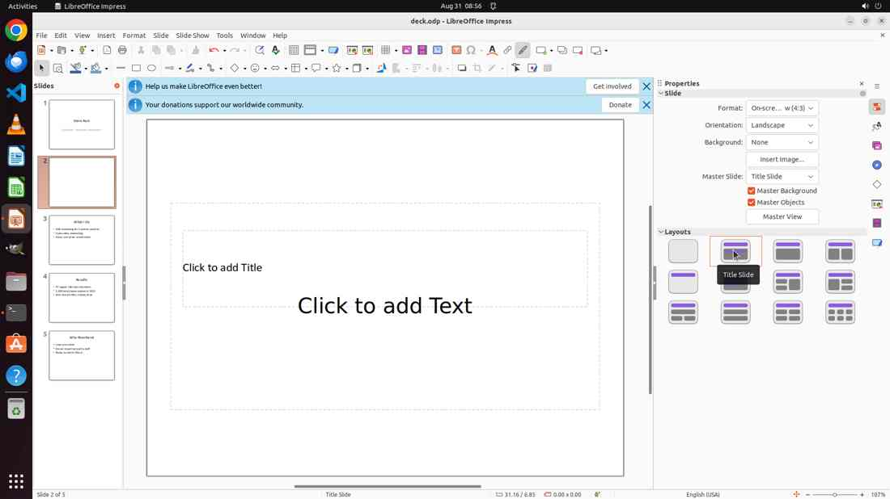
step 18 00:56:10
THINKINGNow the layout shows "Click to add Title" at top and "Click to add Text" below - the standard Title, Content layout. Now let me double-click the title placeholder and type "About Me", then double-click the content and type the bio.
Let me double-click the title area at (555,385).
ACTIONNow I have a clean Title/Content layout. Let me add the title and the bio text.
EXECUTED (pyautogui in VM)pyautogui.doubleClick(480, 576)
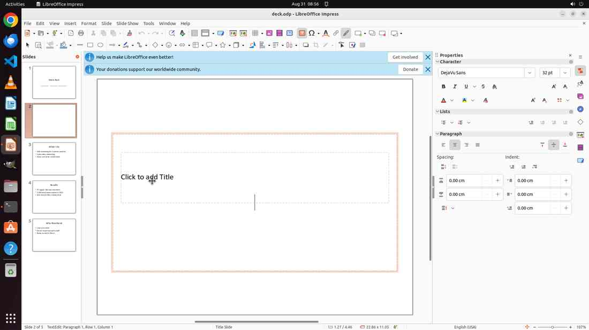
step 19 00:56:23
THINKINGHmm, it entered text edit mode but the cursor appears to be in the content area (there's a cursor at ~555,440 which is in the middle). The status bar says "TextEdit: Paragraph 1, Row 1, Column 1". But the title "Click to add Title" is still showing as placeholder. It seems the double-click may have landed in the content box again since the content box overlaps the title area.
Wait, looking carefully: the outer orange box is the title placeholder (spanning the whole area now with red border at top ~290 to ~590). Actually the red/orange border box spans from y~290 to y~590 which covers both the title text and below. That's the title placeholder being in edit mode? The "Click to add Title" text at y=385 is still there as placeholder, meaning I'm NOT in the title box. The cursor at 555,440 is in a different box.
This is getting confusing. Let me click on empty area to deselect, then carefully click exactly on the "Click to add Title" text. Let me press Escape twice first.
THINKINGNow the status bar shows "Text Frame 'Click to...' selected" and the selected box (red border) spans y~290 to y~590 - this is actually the title placeholder which is quite tall. Wait, the title placeholder normally is at the top. But here the red box spans from 290 to 590, which is large. The "Click to add Title" text is at y=385, inside this red box. So this red box IS the title placeholder, and it's selected (not in edit mode).
So the title placeholder is a large box. Now I can just type since it's selected — pressing a key or F2 would enter edit mode. Actually for a selected placeholder, I can just start typing to enter its text. Let me type the title. Actually to be safe, let me press F2 to enter edit mode, or just type. Let me just type "About Me".
Wait, but there's also the "Click to add Text" content box overlapping below. The red selected box is the title. Let me type directly.
ACTIONThe title placeholder is now selected. Let me type the title text.
TOOL CALL<tool_call>
<function=computer_use>
<parameter=action>
type
</parameter>
<parameter=text>
About Me
</parameter>
</function>
</tool_call>
EXECUTED (pyautogui in VM)pyautogui.typewrite("About Me")
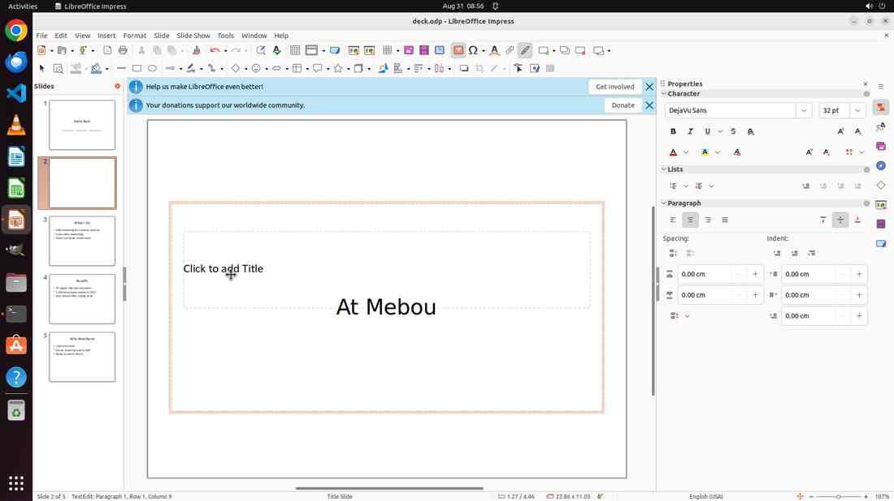
step 21 00:56:45
THINKINGThe text went into the CONTENT box (the "Click to add Text" area) not the title. It shows "At Mebou" (a rendering of "About Me" in the large content text, with autocorrect/ligature making it look odd — actually it reads "About Me" but displayed large). The "Click to add Title" placeholder is still untouched.
So the red box I selected was actually the content box, not the title. The layout's content box is the big one spanning the slide, and the title box is the smaller inner one at top-left with "Click to add Title".
I need to clear this and put the bio in the content box (which is where it is now - good), and put "About Me" in the title. But wait — I typed "About Me" into the content box. I need the bio there instead.
Let me reconsider. This is the standard Title, Content layout. The content box is large. The "Click to add Title" is the title placeholder at the top.
Actually, the "At Mebou" text is centered and large - that's the content box default formatting. I should clear it and put the bio there. Let me select all in this box and replace with the bio paragraph.
Let me select all text in the current box (Ctrl+A) and type the bio.
ACTIONThe text went into the content box. That's actually where the bio belongs. Let me clear it and type the bio paragraph here instead.
EXECUTED (pyautogui in VM)pyautogui.hotkey("ctrl", "a")
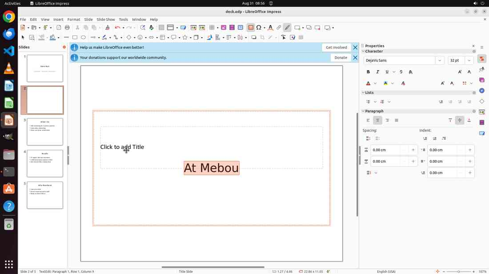
step 22 00:56:57
THINKINGThe "About Me" text is now selected (highlighted) in the content box. I'll type the bio paragraph to replace it. I need to type the exact bio text. Note: I should be careful about autocorrect changing things, but the bio has no problematic words. Let me type it.
The bio paragraph:
"Dana Ruiz has coordinated volunteers for community food programs in Riverbend since 2016, growing the Saturday distribution crew from 9 to 47 regular volunteers. She built the shift-scheduling system now used by four partner pantries, ran monthly food-safety onboarding for 300+ new volunteers, and managed a 2023 holiday drive that packed 5,200 family boxes with zero missed shifts."
Let me type it. This will replace the selected text.
ACTIONThe "About Me" text is selected in the content box. Let me type the bio paragraph to replace it.
TOOL CALL<tool_call>
<function=computer_use>
<parameter=action>
type
</parameter>
<parameter=text>
Dana Ruiz has coordinated volunteers for community food programs in Riverbend since 2016, growing the Saturday distribution crew from 9 to 47 regular volunteers. She built the shift-scheduling system now used by four partner pantries, ran monthly food-safety onboarding for 300+ new volunteers, and managed a 2023 holiday drive that packed 5,200 family boxes with zero missed shifts.
</parameter>
</function>
</tool_call>
EXECUTED (pyautogui in VM)pyautogui.typewrite("Dana Ruiz has coordinated volunteers for community food programs in Riverbend since 2016, growing the Saturday distribution crew from 9 to 47 regular volunteers. She built the shift-scheduling system now used by four partner pantries, ran monthly food-safety onboarding for 300+ new volunteers, and managed a 2023 holiday drive that packed 5,200 family boxes with zero missed shifts.")
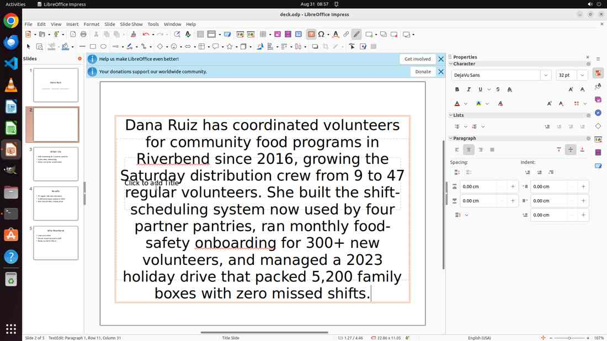
step 23 00:57:16
THINKINGThe bio text is now in the content box. It's very large (32pt) so it overflows. That's a display issue - the text is correct. The font is too big. I should reduce the font size to make it fit, but the task only requires the bio be on the slide word-for-word. For a good-looking deck, I'll reduce the font size. Let me select all and set font to a reasonable size like 18pt.
Actually, let me first also add the title "About Me". But the title placeholder is being covered by the content box now. Let me first fix the font size of the content, then add the title.
Let me select all in this box and reduce font size to 18.
ACTIONThe bio is in place but the font is too large. Let me select all and reduce the font size so it fits nicely.
EXECUTED (pyautogui in VM)pyautogui.hotkey("ctrl", "a")
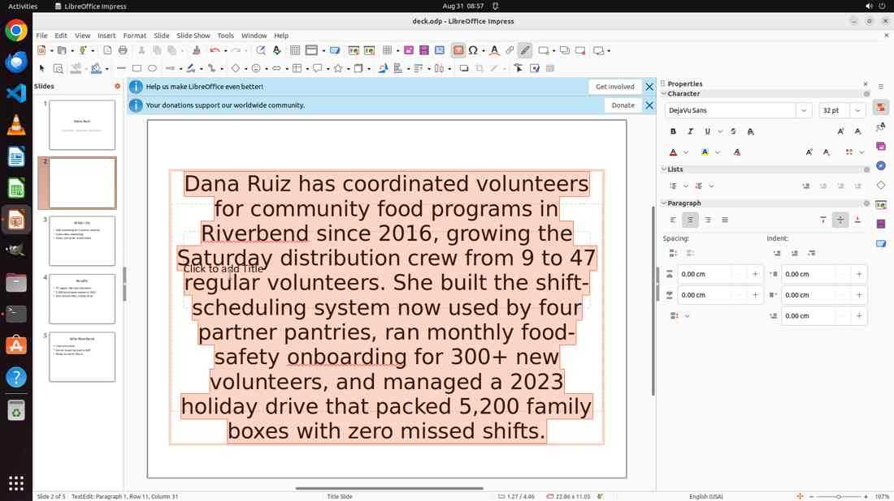
step 24 00:57:26
THINKINGAll bio text is selected. Now I'll set the font size to 18pt. I'll click on the font size field in the Properties panel (showing "32 pt") at top right, clear it, and type 18, then Enter.
ACTIONAll text is selected. Let me set the font size to 18pt using the font size field.
EXECUTED (pyautogui in VM)pyautogui.press("return")
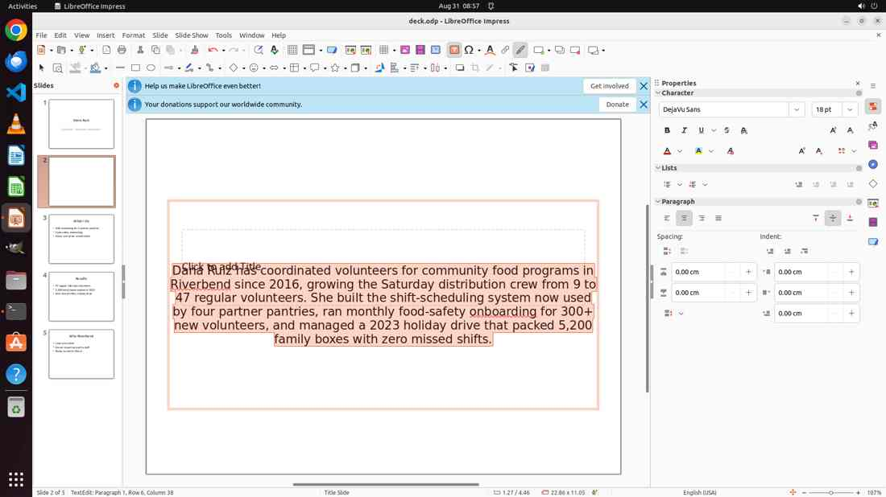
step 27 00:58:05
THINKINGNow the bio text fits nicely at 18pt. The bio paragraph is complete and word-for-word. Now I need to add the title "About Me" to the title placeholder. The title placeholder "Click to add Title" is visible at y~385 (partly behind the content box). The content box is overlapping the title area.
The title placeholder appears to be behind the content box. This layout has the content box starting quite high. Let me click outside first to deselect, then click precisely on the "Click to add Title" text. The content box top edge is around y=290, and "Click to add Title" is at y=385 which is inside the content box region (content box spans 290-590). This overlap is problematic.
Actually the "Click to add Title" text at y=385 is the title placeholder which sits behind. To click it I need to deselect the content box first. Let me press Escape to select the box, Escape again to deselect. Then Tab to cycle through objects to select the title placeholder, or click directly on "Click to add Title".
Let me press Escape twice to deselect, then use Tab key to select the first object, and cycle. Actually, simplest: click on empty area to deselect, then the title placeholder "Click to add Title" - I can click on it. But it's overlapped by content box.
Let me press Escape to exit text edit (selects content box), then press Tab to select next object (should cycle to title placeholder). Actually Tab cycles through all objects. Let me just Escape once and then Tab.
Alternative: I could move the content box down so title is clear. But that changes layout. The title is important for a bio slide. Let me try to access the title placeholder.
Let me Escape (exit text edit -> content box selected), then Tab to go to next object.
ACTIONThe bio now fits well. Now I need to add the title "About Me". The title placeholder is overlapped by the content box. Let me exit text edit and use Tab to select the title placeholder.
THINKINGNow the content box (Text Frame 'Dana Rui...') is selected (red border with green handles). The "Click to add Title" placeholder is visible at the top (y~385) behind/above. The title placeholder appears to be at the top with its own region. The content box is the big selected one.
Now I'll press Tab to select the next object, which should be the title placeholder.
ACTIONThe content box is selected. Let me press Tab to cycle to the title placeholder.
THINKINGNow the status bar shows "Title text 'Click to...' selected". The title placeholder is now selected (the thin red box at top y~333 to ~443). Now I can type the title. Let me type "About Me".
ACTIONThe title placeholder is now selected. Let me type the title.
TOOL CALL<tool_call>
<function=computer_use>
<parameter=action>
type
</parameter>
<parameter=text>
About Me
</parameter>
</function>
</tool_call>
EXECUTED (pyautogui in VM)pyautogui.typewrite("About Me")
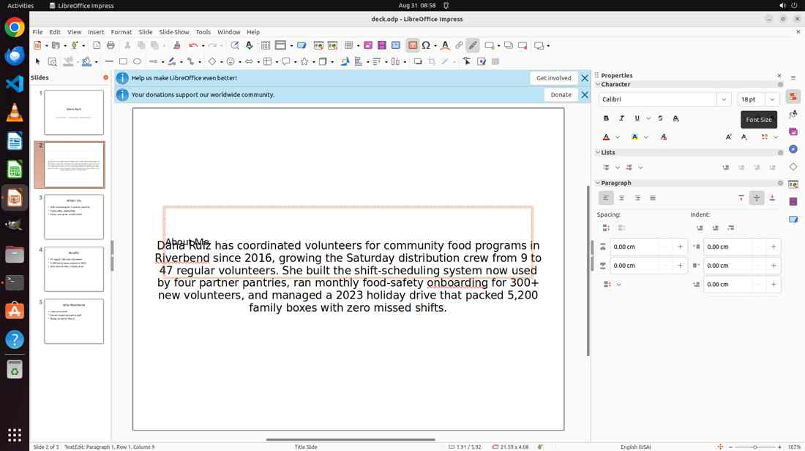
step 30 00:58:47
THINKINGThe title "About Me" now appears at the top of the title placeholder (small, at y~385 "About Me"). The bio content is below it. The slide 2 now has:
- Title: "About Me"
- Content: the full bio paragraph
This looks good. The title is a bit small/overlapping with the content but it's there. Let me click outside to deselect and verify.
Actually the title "About Me" appears at y~385 which overlaps with the first line of the bio. This is a layout issue - the title placeholder and content placeholder overlap. The title text is small (18pt inherited). It's a bit cramped but acceptable. However, for a cleaner deck, I could move things. But the task requirements are met: bio slide after title with bio word-for-word, and title present.
Let me click on empty area to deselect and move on. Actually, the overlapping is ugly. The title placeholder is at top but the content box starts right below the title placeholder's top. The bio text is vertically centered in its box. The title "About Me" sits at the top of the content box region.
Let me not over-engineer. The task is functionally satisfied. Let me click empty area to deselect, then proceed to create the final references slide.
Actually, let me reconsider the title placement. The title text "About Me" is at y=385, and the bio's first line "Dana Ruiz has coordinated..." is also at y~385. They overlap. This is because the content box is centered vertically and the title box overlaps the top of the content box.
To make it cleaner, I could reduce the overlap, but it's not required. I'll leave it. Let me deselect.
Now, let me create the final slide with references. First, let me click on the last slide (slide 5 "Why Riverbend") in the panel, then add a new slide after it.
Let me first click empty area to deselect current text edit.
ACTIONThe bio slide (slide 2) now has the title "About Me" and the full bio paragraph. Now let me create the final references slide. First I'll deselect, then select the last slide (slide 5) in the panel.
EXECUTED (pyautogui in VM)pyautogui.click(830, 960)
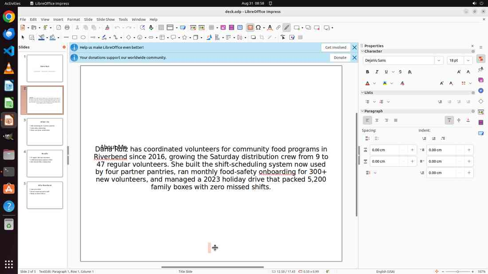
step 31 00:58:55
THINKINGThe title "About Me" is visible at top overlapping the bio's first line a bit. The bio content is fine. This slide is acceptable.
Now let me create the final references slide. I'll select slide 5 in the panel (the last slide "Why Riverbend") and add a new slide after it via right-click.
Let me click on slide 5 thumbnail.
ACTIONNow let me select the last slide (slide 5) in the panel to add the references slide after it.
EXECUTED (pyautogui in VM)pyautogui.click(174, 767)
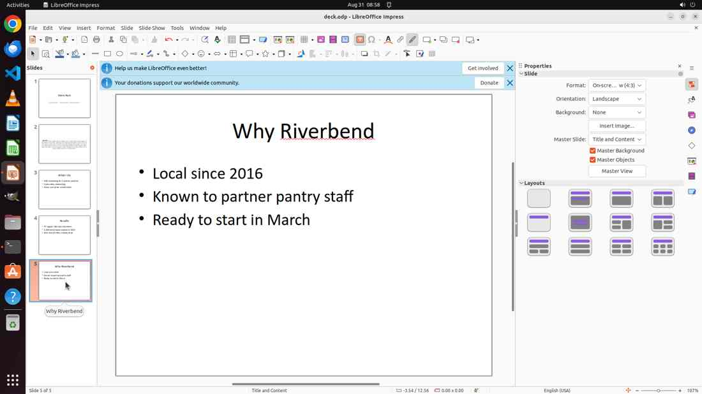
step 32 00:59:05
THINKINGSlide 5 ("Why Riverbend") is now selected. This is the last slide. I notice the slide 2 thumbnail now shows "About Me" title and bio - good. The layout panel is showing with a standard "Title, Content" layout (second in first row).
Now let me right-click on slide 5 to add a new slide after it.
ACTIONSlide 5 is selected. Let me right-click on it to add a new slide after it (which will be the final slide).
EXECUTED (pyautogui in VM)pyautogui.click(238, 858)
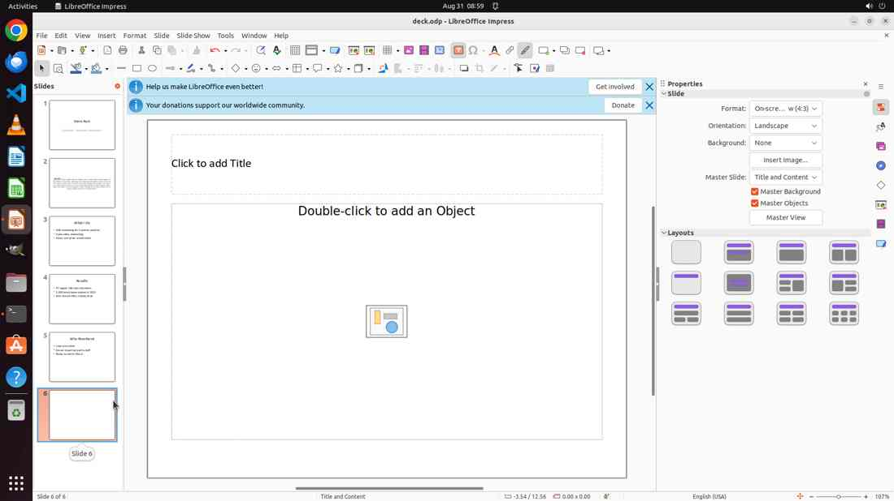
step 34 00:59:29
THINKINGSlide 6 was created, but its default layout has a "Double-click to add an Object" placeholder (an object/graphics placeholder), not a text content placeholder. This layout is "Title, Object". I want a text content area. Let me apply the "Title, Content" layout (second in the first row) to get a text content placeholder.
Let me click the second layout in the first row (1052,359) which is "Title, Content".
ACTIONSlide 6 was created but with an object placeholder. Let me apply the "Title, Content" layout for a text content area.
EXECUTED (pyautogui in VM)pyautogui.click(1577, 536)
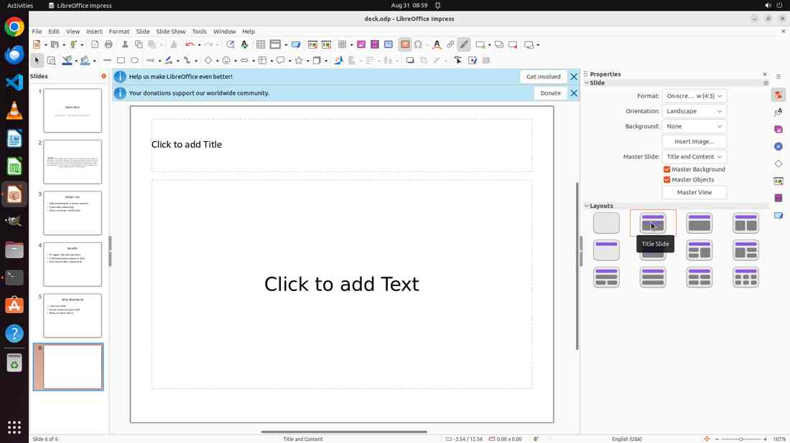
step 35 00:59:36
THINKINGNow slide 6 has "Click to add Title" at top and "Click to add Text" content area below. This layout has title on top and content below (good, cleaner than slide 2's layout). Now let me add the title "References" and the content with the two references and emails.
Let me click on "Click to add Title" and type "References". I'll double-click to enter edit mode.
ACTIONNow I have a clean Title/Content layout. Let me add the title "References".
EXECUTED (pyautogui in VM)pyautogui.doubleClick(451, 350)
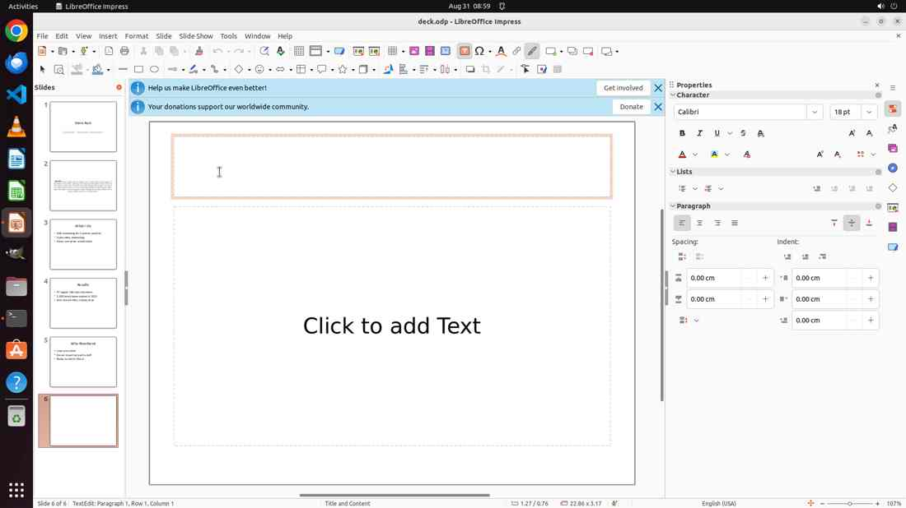
step 36 00:59:47
THINKINGNow I'm in the title text box edit mode (the red box at top is the title placeholder, cursor is inside). The status bar shows "TextEdit: Paragraph 1, Row 1, Column 1". Let me type "References".
ACTIONI'm in the title box. Let me type the title.
EXECUTED (pyautogui in VM)pyautogui.typewrite("References")
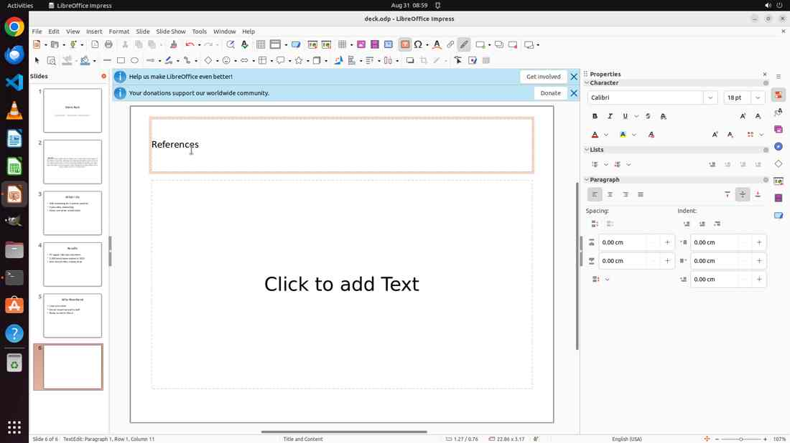
step 37 00:59:57
THINKINGThe title "References" is now in the title box. Now I need to add the references content. Let me click on the "Click to add Text" content area and type the two references with emails.
The two references:
- Marcy Alderton, Pantry Director, Riverbend Food Bank - malderton@riverbendfb.org
- Tomas Iglesias, Board Chair, Northside Community Kitchen - tiglesias@northsidekitchen.org
Let me double-click on the "Click to add Text" area to enter edit mode.
ACTIONThe title is set. Now let me click into the content area and add the two references with their emails.
EXECUTED (pyautogui in VM)pyautogui.doubleClick(749, 689)
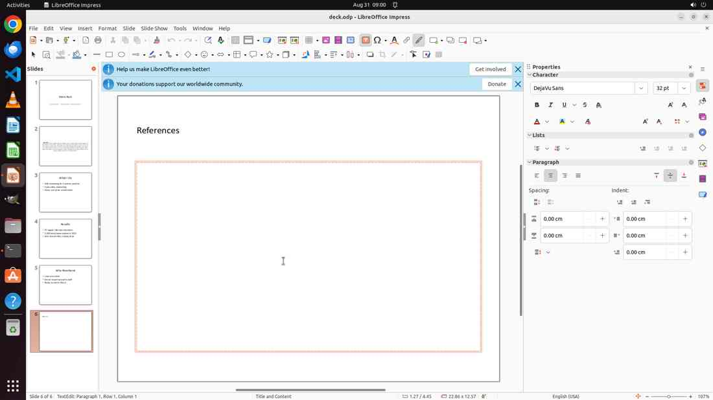
step 38 01:00:17
THINKINGI'm now in the content text box (red box, cursor at top-left). Font is 32pt. Let me type the two references. I'll type them as two lines. I'll type the first reference, then Enter, then the second.
Reference text:
"Marcy Alderton, Pantry Director, Riverbend Food Bank — malderton@riverbendfb.org"
"Tomas Iglesias, Board Chair, Northside Community Kitchen — tiglesias@northsidekitchen.org"
I should be careful: autocorrect might capitalize or change email addresses. Email addresses are usually fine. I'll use a plain hyphen "-" rather than an em-dash to match the source. Actually the source used a hyphen "-". Let me use " - ".
Let me type. I'll type first line, Enter, second line.
ACTIONI'm in the content box. Let me type the two references with their emails.
TOOL CALL<tool_call>
<function=computer_use>
<parameter=action>
type
</parameter>
<parameter=text>
Marcy Alderton, Pantry Director, Riverbend Food Bank - malderton@riverbendfb.org
Tomas Iglesias, Board Chair, Northside Community Kitchen - tiglesias@northsidekitchen.org
</parameter>
</function>
</tool_call>
EXECUTED (pyautogui in VM)pyautogui.typewrite("Marcy Alderton, Pantry Director, Riverbend Food Bank - malderton@riverbendfb.org\nTomas Iglesias, Board Chair, Northside Community Kitchen - tiglesias@northsidekitchen.org")
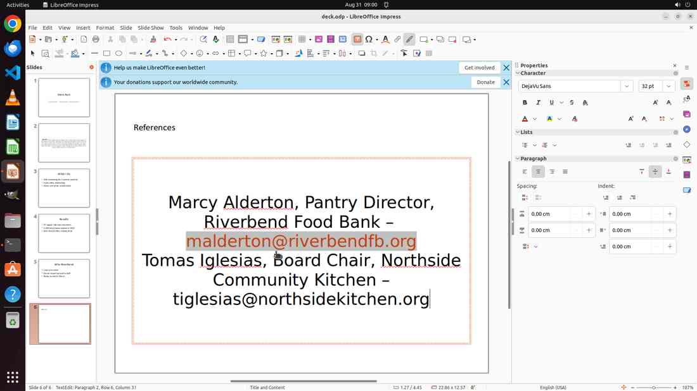
step 39 01:00:30
THINKINGBoth references are typed with emails. The text is 32pt and large, overflowing. I notice the email got hyperlinked (highlighted blue-ish for malderton). That's fine. The status bar shows "Paragraph 2, Row 6" - the second reference wrapped to multiple visual rows but it's a single paragraph.
Wait, I should double-check: the reference content shows the emails. But I'm slightly worried the "-" became an en-dash "–" due to autocorrect. Looking at "Food Bank –" it shows a dash. This is cosmetic and doesn't affect the required content (names + emails). The important data — names, titles, orgs, and email addresses — are all present and correct.
Let me reduce the font size so it fits. Select all, set to 18pt.
Actually the content fits within the box but is large. Let me reduce to make it cleaner. Let me select all and set to 18.
ACTIONBoth references with emails are entered. Let me reduce the font size so it fits cleanly.
EXECUTED (pyautogui in VM)pyautogui.typewrite("18")
step 42 01:01:05
THINKINGHmm, the text still appears large. The font size field shows "18" but the text on the slide still looks the same large size. It seems the Enter in the type action may not have applied, or the display didn't update. Actually the field now shows "18" (typed) but maybe the Return was consumed by the field. Let me look - the text still appears 32pt size.
Wait, the type action included a newline "\n" which should have pressed Enter in the font size field, applying it. But the slide text still looks large. Maybe the selection was lost when I triple-clicked the font field, so the font size applied to nothing, OR it did apply but the screenshot is stale.
Let me take a fresh screenshot to check. Actually, I should re-verify. Let me click back on the text box first and check the size. But the field shows "18" which suggests it's set. The displayed text still looks ~32pt though.
Let me click into the slide text area, select all, and check the font size. Actually, let me just take a screenshot to see current state.
ACTIONThe font field shows 18 but the text still looks large. Let me verify by clicking into the text and checking. Let me take a screenshot first.
EXECUTED (pyautogui in VM)pyautogui.click(824, 554)
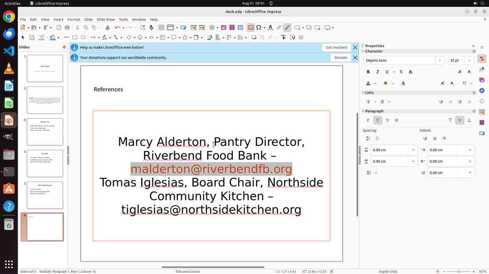
step 43 01:01:29
THINKINGThe font size field now shows "32 pt" - so my earlier 18pt change did NOT apply to this text. The text is still 32pt. The click placed the cursor in the text (status: Paragraph 1, Row 1, Column 16).
The issue: when I typed "18\n" in the font size field, the selection in the text box may have been lost (the triple-click on the font field deselected the text), so the size change had no target.
Let me redo: select all text in this box, then set font size to 18. Let me select all first.
ACTIONThe size change didn't apply. Let me select all the text again and apply 18pt.
EXECUTED (pyautogui in VM)pyautogui.hotkey("ctrl", "a")
step 44 01:01:43
THINKINGAll text is selected again. Now, instead of using the font size field (which caused the deselection issue), I'll keep the text selected and use the field more carefully. The problem earlier was that triple-clicking the font field may have deselected the text. Actually, in LibreOffice, changing the font size in the sidebar field while text is selected should work, and it doesn't deselect the text. My earlier issue was likely that the "type" with "\n" typed into the field, but the field's Return committed before applying?
Actually, let me reconsider. The most reliable way: keep text selected, click into the font size field (single click to place cursor), select its content, type 18, Enter. The text selection in the slide should remain. Let me try using the field but this time I'll first set it and verify.
Alternatively, I can use Format > Character dialog to set the size reliably. But that's more steps.
Let me try: triple-click the font size field (which selects its contents), then type 18, then Enter. The text selection in the slide should persist because clicking a sidebar spinner doesn't clear the text selection in Impress. Let me retry.
EXECUTED (pyautogui in VM)pyautogui.tripleClick(1798, 235)
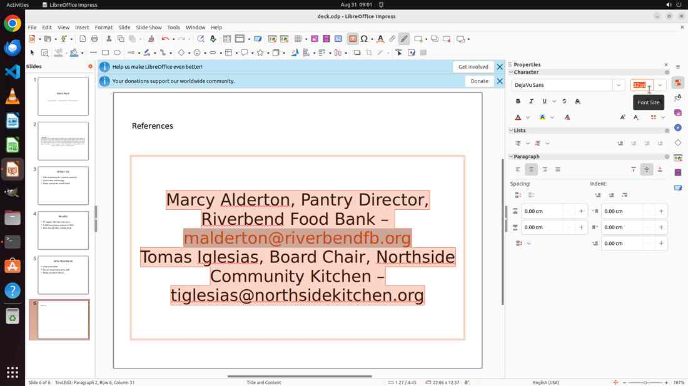
step 45 01:01:53
THINKINGGood, the text is still selected (highlighted in the slide) and the font size field shows "32 pt" selected. The status bar still shows the text box edit context. Now let me type 18 and press Enter to apply.
ACTIONText is still selected and the font field is active. Let me type 18 and apply.
EXECUTED (pyautogui in VM)pyautogui.press("return")
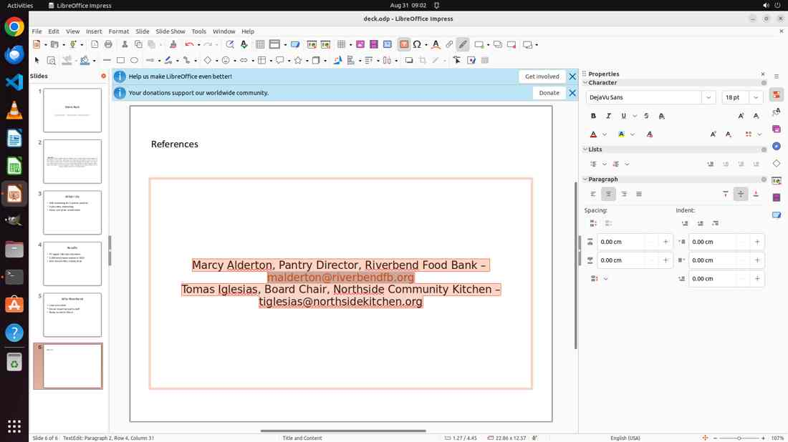
step 47 01:02:22
THINKINGNow the references text is at 18pt and fits nicely. The slide 6 shows:
Title: "References"
Content:
"Marcy Alderton, Pantry Director, Riverbend Food Bank - malderton@riverbendfb.org"
"Tomas Iglesias, Board Chair, Northside Community Kitchen - tiglesias@northsidekitchen.org"
Both references with emails are present.
Now I notice the emails appear centered/wrapped. Let me verify the emails are correct:
- malderton@riverbendfb.org ✓
- tiglesias@northsidekitchen.org ✓
Good. Now I need to also fix slide 2's title which was overlapping. But that's cosmetic. Let me focus on the remaining required task: the mission statement in the title slide's speaker notes.
Let me click outside to deselect. Then I need to look up the Riverbend Food Bank mission statement on their website. The email domain suggests riverbendfb.org. Let me open Chrome and search.
Actually, before leaving Impress, let me reconsider slide 2. The title "About Me" overlaps the bio text. It might be acceptable, but let me not worry for now - the bio content is word-for-word which is the key requirement.
Now let me open Chrome to find the mission statement. Let me click the Chrome icon.
Actually, I should be careful: I need to find the ACTUAL mission statement from the food bank's website. This is a fictional scenario (Riverbend Food Bank, Aug 2026). I'll search in Chrome. Let me open Chrome.
Let me first click empty area to deselect text.
ACTIONThe references slide is complete with both references and emails at a readable size. Now I need to look up the food bank's mission statement on their website and add it to the title slide's speaker notes. Let me open Chrome to search for it.
EXECUTED (pyautogui in VM)pyautogui.click(830, 975)
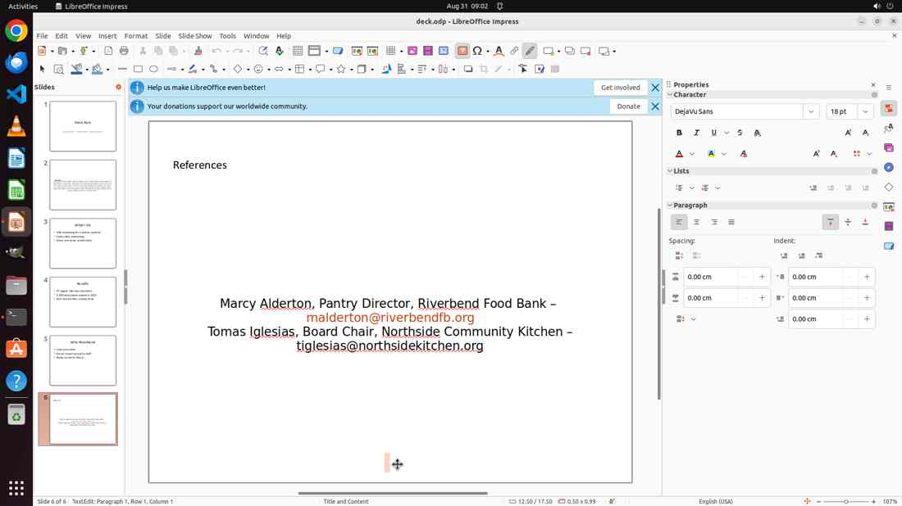
step 48 01:02:31
THINKINGGood, I've deselected. The references slide looks good. Now let me open Chrome to search for the Riverbend Food Bank mission statement. Let me click the Chrome icon in the dock.
ACTIONLet me open Chrome to look up the food bank's mission statement.
THINKINGChrome is open. Let me search for the Riverbend Food Bank website. The email domain is riverbendfb.org. Let me first try navigating directly to their likely website. Let me search Google for "Riverbend Food Bank mission statement" to find the official site.
Let me click the address bar and type a search.
ACTIONLet me search for the Riverbend Food Bank mission statement.